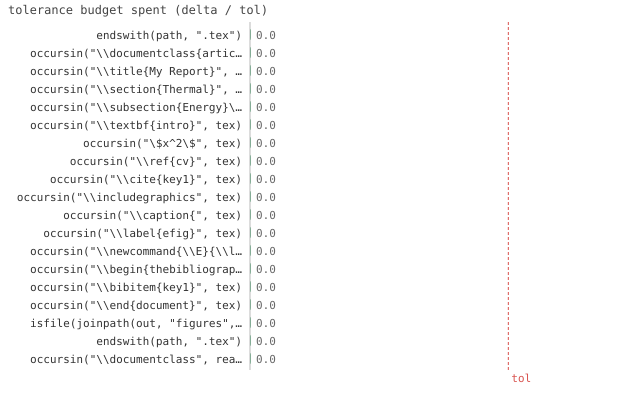

19/19 passed · 0.31s
| id | label | got | want | Δ vs tol (kind) | |
|---|---|---|---|---|---|
| ✓ | t495 | endswith(path, ".tex") @ test_latex.jl:39 code | 1.0 | 1.0 | 0.0 vs 0.5 (abs) |
| ✓ | t496 | occursin("\\documentclass{article}", tex) @ test_latex.jl:41 code | 1.0 | 1.0 | 0.0 vs 0.5 (abs) |
| ✓ | t497 | occursin("\\title{My Report}", tex) @ test_latex.jl:42 code | 1.0 | 1.0 | 0.0 vs 0.5 (abs) |
| ✓ | t498 | occursin("\\section{Thermal}", tex) @ test_latex.jl:43 code | 1.0 | 1.0 | 0.0 vs 0.5 (abs) |
| ✓ | t499 | occursin("\\subsection{Energy}\\label{energy}", tex) @ test_latex.jl:44 code | 1.0 | 1.0 | 0.0 vs 0.5 (abs) |
| ✓ | t500 | occursin("\\textbf{intro}", tex) @ test_latex.jl:45 code | 1.0 | 1.0 | 0.0 vs 0.5 (abs) |
| ✓ | t501 | occursin("\$x^2\$", tex) @ test_latex.jl:46 code | 1.0 | 1.0 | 0.0 vs 0.5 (abs) |
| ✓ | t502 | occursin("\\ref{cv}", tex) @ test_latex.jl:47 code | 1.0 | 1.0 | 0.0 vs 0.5 (abs) |
| ✓ | t503 | occursin("\\cite{key1}", tex) @ test_latex.jl:48 code | 1.0 | 1.0 | 0.0 vs 0.5 (abs) |
| ✓ | t504 | occursin("\\includegraphics", tex) @ test_latex.jl:49 code | 1.0 | 1.0 | 0.0 vs 0.5 (abs) |
| ✓ | t505 | occursin("\\caption{", tex) @ test_latex.jl:50 code | 1.0 | 1.0 | 0.0 vs 0.5 (abs) |
| ✓ | t506 | occursin("\\label{efig}", tex) @ test_latex.jl:51 code | 1.0 | 1.0 | 0.0 vs 0.5 (abs) |
| ✓ | t507 | occursin("\\newcommand{\\E}{\\langle H\\rangle}", tex) @ test_latex.jl:52 code | 1.0 | 1.0 | 0.0 vs 0.5 (abs) |
| ✓ | t508 | occursin("\\begin{thebibliography}", tex) @ test_latex.jl:53 code | 1.0 | 1.0 | 0.0 vs 0.5 (abs) |
| ✓ | t509 | occursin("\\bibitem{key1}", tex) @ test_latex.jl:54 code | 1.0 | 1.0 | 0.0 vs 0.5 (abs) |
| ✓ | t510 | occursin("\\end{document}", tex) @ test_latex.jl:55 code | 1.0 | 1.0 | 0.0 vs 0.5 (abs) |
| ✓ | t511 | isfile(joinpath(out, "figures", "p", "energy", "efig.pdf")) @ test_latex.jl:56 code | 1.0 | 1.0 | 0.0 vs 0.5 (abs) |
| ✓ | t512 | endswith(path, ".tex") @ test_latex.jl:67 code | 1.0 | 1.0 | 0.0 vs 0.5 (abs) |
| ✓ | t513 | occursin("\\documentclass", read(path, String)) @ test_latex.jl:68 code | 1.0 | 1.0 | 0.0 vs 0.5 (abs) |

⤓ downloadPinax.reset!(; title="My Report")
out = site("tex")
path = Pinax.render(; out=out, theme=:latex)
@test endswith(path, ".tex") # no compiler -> .tex returnedtex = read(path, String)
@test occursin("\\documentclass{article}", tex)@test occursin("\\title{My Report}", tex)@test occursin("\\section{Thermal}", tex)@test occursin("\\subsection{Energy}\\label{energy}", tex)@test occursin("\\textbf{intro}", tex) # markdown bold -> \textbf@test occursin("\$x^2\$", tex) # native inline math@test occursin("\\ref{cv}", tex) # @ref -> \ref (forward ref resolved)@test occursin("\\cite{key1}", tex) # @cite -> \cite@test occursin("\\includegraphics", tex)@test occursin("\\caption{", tex)@test occursin("\\label{efig}", tex)@test occursin("\\newcommand{\\E}{\\langle H\\rangle}", tex)@test occursin("\\begin{thebibliography}", tex)@test occursin("\\bibitem{key1}", tex)@test occursin("\\end{document}", tex)@test isfile(joinpath(out, "figures", "p", "energy", "efig.pdf")) # figure materializedPinax.reset!(; theme=:latex, title="T2")
path = Pinax.render(; out=site("tex2")) # theme taken from @pinaxsetup
@test endswith(path, ".tex")@test occursin("\\documentclass", read(path, String)){kind=link}